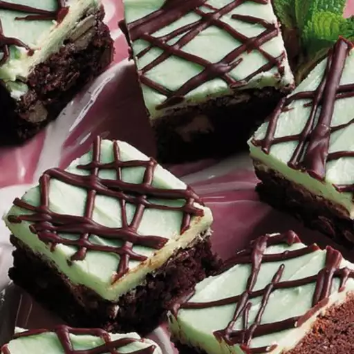

Mint Brownies

Description
Indulge in the rich, decadent flavor of these Mint Brownies, a delightful twist on the classic treat.
These fudgy brownies are infused with refreshing mint, creating a perfect balance of chocolatey goodness and cool minty freshness.
Each bite delivers a moist and chewy texture with a subtle minty kick, topped with a smooth layer of mint-infused chocolate ganache for an extra touch of luxury.
Perfect for holiday gatherings, special occasions, or simply as a treat for yourself, these Mint Brownies are sure to impress and satisfy any sweet tooth.
Ingredients
- 1 cup white sugar
- ½ cup butter, softened
- 4 eggs
- 1 1/2 cups chocolate syrup
- 1 cup all-purpose flour
- 2 cups confectioners' sugar
- 1/2 cup butter, softened
- 2 tablespoons creme de menthe liqueur
- 6 tablespoons butter
- 1 cup semisweet chocolate chips
Steps
- Preheat oven to 350 degrees F (175 degrees C). Grease a 9x13 inch baking dish.
- In a large bowl, cream together 1 cup sugar and 1/2 cup of softened butter until smooth. Beat in eggs one at a time, then stir in the chocolate syrup. Stir in the flour until just blended. Spread the batter evenly into the prepared pan.
- Bake for 25 to 30 minutes in the preheated oven, or until top springs back when lightly touched. Cool completely in the pan.
- In a small bowl, beat the confectioners' sugar, 1/2 cup butter or margarine and creme de menthe until smooth. Spread evenly over the cooled brownies, then chill until set.
- In a small bowl over simmering water, or in the microwave, melt the remaining 6 tablespoons of butter and the chocolate chips, stirring occasionally until smooth. Allow to cool slightly, then spread over the top of the mint layer. Cover, and chill for at least 1 hour before cutting into squares.